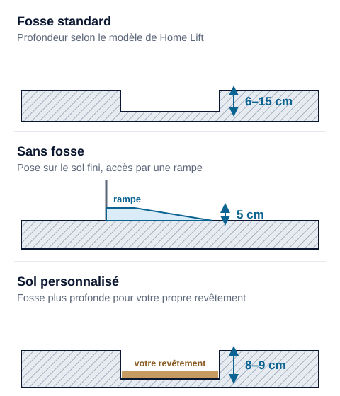
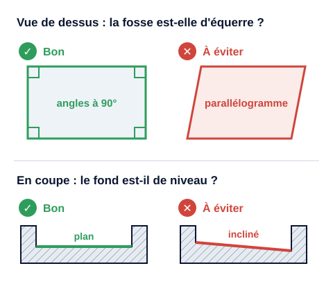
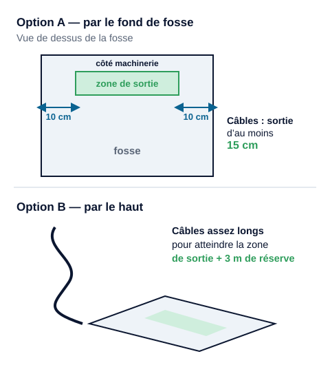
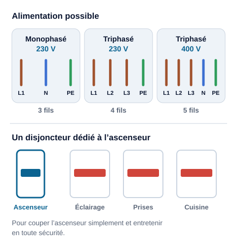
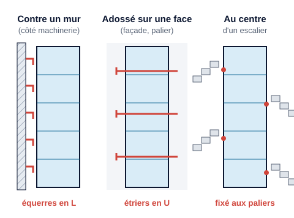
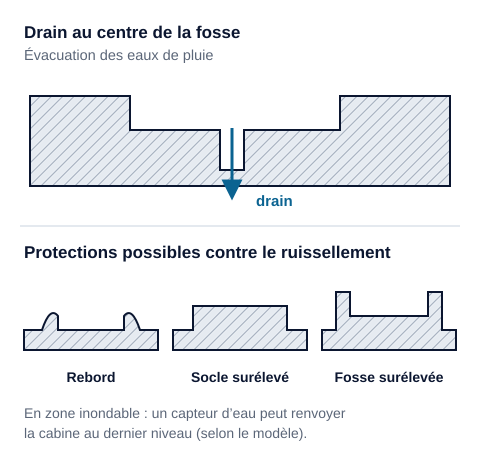
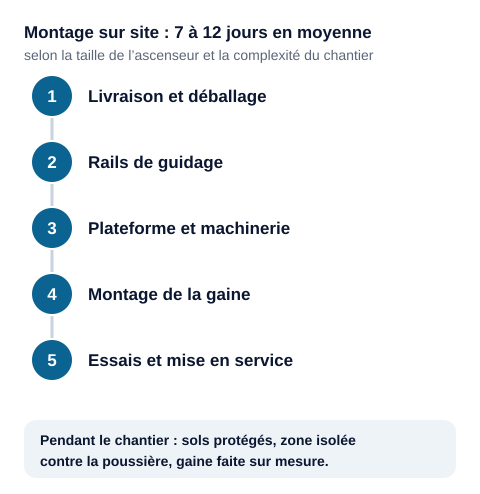
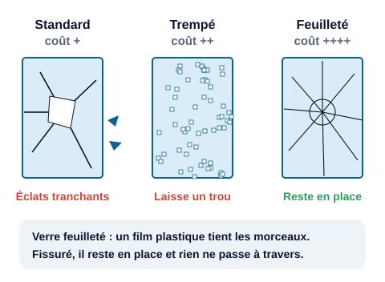
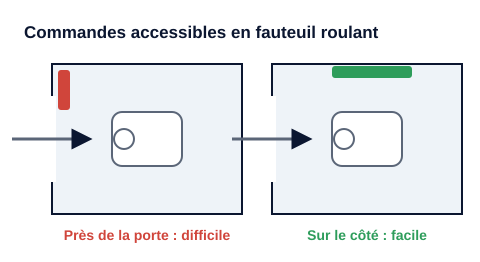

Préparer l'installation d'un Home Lift : fosse, électricité, fixations
Un Home Lift se pose vite quand le chantier est prêt. Ce guide rassemble, schémas à l'appui, ce qu'il faut prévoir avant notre arrivée : la fosse, les arrivées électriques, les points de fixation et, pour une installation extérieure, l'évacuation de l'eau.
Il complète notre guide de conception pour architectes (trémie, implantations, hauteur du dernier niveau). Les cotes exactes de votre projet figurent toujours sur le plan d'exécution que nous vous remettons après l'étude.
1. La fosse : trois cas possibles
Un Home Lift n'a pas besoin d'une fosse profonde comme un ascenseur d'immeuble (1,2 m). Selon le modèle et le sol fini, trois cas se présentent :
- Fosse standard : une réservation peu profonde, de 6 à 15 cm selon le modèle (10 à 15 cm pour nos Home Lifts hydrauliques), aux dimensions du plan de découpe que nous fournissons.
- Sans fosse : si le sol ne peut pas être creusé, la plateforme se pose sur le sol fini et l'accès se fait par une petite rampe d'environ 5 cm.
- Sol personnalisé : si le client veut poser son propre revêtement dans la cabine (marbre, parquet), on approfondit la fosse à 8 ou 9 cm pour loger l'épaisseur du revêtement.

2. Une fosse d'équerre et de niveau
La gaine et ses rails sont montés à partir du fond de fosse : un défaut de quelques millimètres en bas se retrouve amplifié en haut. Deux contrôles avant notre venue :
- Vue de dessus : la fosse est un rectangle aux angles à 90°, pas un parallélogramme.
- En coupe : le fond est plan et de niveau, sans pente.

3. Les arrivées électriques et téléphoniques
Deux solutions pour amener l'alimentation et la ligne d'alarme :
- Par le fond de fosse : les câbles sortent dans une zone située côté machinerie, à 10 cm des bords, avec au moins 15 cm de longueur libre.
- Par le haut : les câbles descendent jusqu'à la fosse ; prévoyez la longueur nécessaire pour atteindre la zone de sortie, plus 3 m de réserve.

4. L'alimentation électrique
Nos Home Lifts se raccordent au réseau domestique : 220/230 V monophasé ou 380/400 V triphasé, pour une puissance de 2,9 kW jusqu'à 400 kg de charge.
- La maison n'a qu'une phase : restez en monophasé, c'est le plus simple.
- Le triphasé est disponible : il offre une alimentation plus stable et moins sensible aux pics de consommation.
- Dans tous les cas, prévoyez un disjoncteur dédié à l'ascenseur : il permet de couper l'appareil simplement et de réaliser l'entretien en toute sécurité.

5. Les points de fixation de la gaine
La gaine est autoportante mais elle est tenue latéralement à la structure. Trois cas courants :
- Contre un mur : le côté machinerie est fixé au mur par des équerres en L, à chaque niveau.
- Adossée sur une face : en façade ou contre un palier, elle est tenue par des étriers en U.
- Au centre d'un escalier : elle est fixée aux paliers et aux limons, comme dans une cage d'escalier existante.

6. Installation à l'extérieur
Un Home Lift peut être installé en façade. La fosse, exposée à la pluie, demande un peu plus de préparation :
- Un drain au centre de la fosse pour évacuer l'eau.
- Une protection contre le ruissellement selon le site : rebord, socle surélevé ou fosse surélevée.
- Des matériaux adaptés : structure et portes résistantes à la corrosion, joints refaits au silicone pendant le montage, boutons d'appel étanches.
- Une toiture ou un auvent sur mesure lorsque l'ascenseur est très exposé.
En zone inondable, un capteur d'eau peut renvoyer la cabine au dernier niveau (selon le modèle).

7. Le déroulé du montage
Une fois la fosse et l'électricité prêtes, le montage sur site dure 7 à 12 jours en moyenne, selon la taille de l'ascenseur et la complexité du chantier. Nos engagements : sols protégés, zone de travail isolée contre la poussière et gaine fabriquée sur mesure avant l'installation.

8. Sécurité : verre feuilleté et commandes accessibles
Toutes les parois vitrées sont en verre feuilleté de sécurité. Il coûte plus cher que le verre standard ou trempé, mais en cas de choc, le film intercalaire retient les morceaux : le vitrage se fissure, reste en place et rien ne passe au travers.

À cela s'ajoutent le double parachute (sur le vérin et sous la cabine), la batterie de secours qui ramène la cabine au niveau le plus bas et déverrouille la porte, et la descente manuelle (voir l'hydraulique en pied de gaine). Nos Home Lifts sont conformes à la norme EN 81-41.
Pour un utilisateur en fauteuil roulant, placez le panneau de commande sur le côté de la cabine plutôt qu'à côté de la porte : il reste à portée de main en entrant.

9. Après la livraison : entretien du verre
Pour garder des parois nettes sans les rayer : dépoussiérez avec un papier doux, appliquez un nettoyant pour vitres, puis essuyez avec une microfibre non pelucheuse. À éviter : le papier journal, les éponges abrasives et les balais à franges. L'entretien technique, lui, se fait 3 à 4 fois par an.